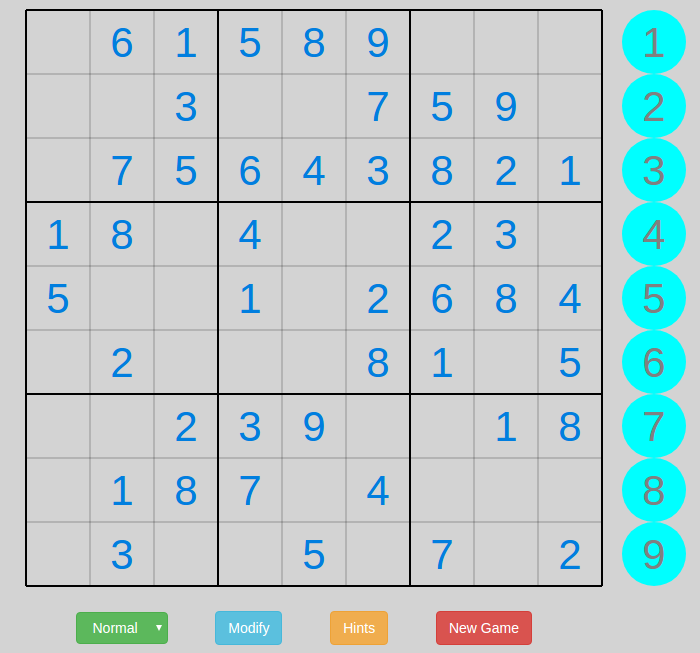
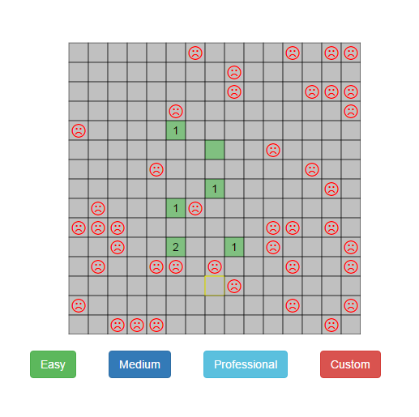
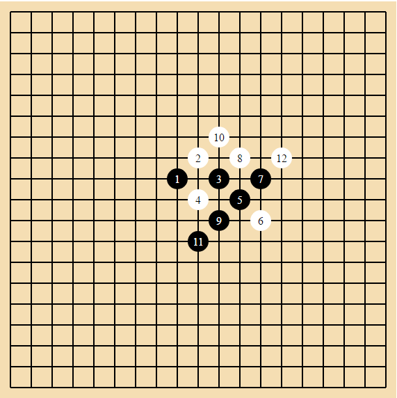

Below are collection of my garage projects hosted on GitHub. These are web applications that are built mostly on HTML, CSS, and client side JavaScript and JavaScript frameworks, including d3.js, AngularJS, jQuery, React, etc. Feel free to give them a try. And I appreciate your comments and suggestions.
 Sudoku, 数独, is a logic-based, combinatorial number-placement puzzle. The objective is to fill a 9×9 grid with digits so that each column, each row, and each of the nine 3×3 subgrids that compose the grid (also called "boxes", "blocks", "regions", or "subsquares") contains all of the digits from 1 to 9. The puzzle setter provides a partially completed grid, which for a well-posed puzzle has a unique solution. Learn more about suduko at Wikipedia (English,中文). Click the image to play sudoku in your browser. Hint:1. Choose the level of your interest. 2. Modify your input with the 'Modify' button. 3. Click 'Hints' button to get one block resolved each time.
 Minesweeper, 扫雷, is a single-player puzzle game. The objective of the game is to clear a rectangular board containing hidden "mines" without detonating any of them, with help from clues about the number of neighboring mines in each field.Feel free to remind yourself the old good time. Learn more about minesweeper at Wikipedia ( English, 中文). Click the picture to play the game! You can create custom layout, any number of rows and columns depends on you. Go challenge yourself. Hint :1. Choose 9x9, 16x16, 30x16 or create your own layout. 2. Use right-click to mark the suspected position.
 Five in a Row, also known as 五子棋, 五子连珠, Gobang, or Gomoku, is an abstract strategy board game. The winner is the first player to get an unbroken row of five stones horizontally, vertically, or diagonally. The current version only supports human mode. You can play with yourself or together with your friend. Playing with computer (algorithm) will be coming later soon. Learn more about the game at Wikipedia( English, 中文). Click the picture to play the game! Go challenge and Enjoy!